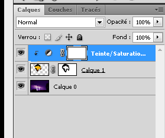

Insertion dans le site
Si vous arrivez ici, c’est pour insérer une image de perspective de bâtiment sur un paysage, pour réaliser ce que l’on appelle chez les archis une “insertion dans le site”.
Ce document est indispensable car il fait partie du volet “paysager” du dossier Permis de Construire.
Préparation de l’image
- Vous disposez d’une image de perspective de votre projet de construction réalisée au moyen de :
- un croquis manuel, que vous avez numérisé avec un scanner
- une image réalisée par un logiciel de rendu (Artlantis, V-Ray, Mental Ray, Maxwell, Piranesi, Kerkythea, etc.)
- une perspective réalisée directement dans un logiciel de dessin (Sketchup, AutoCAD, Archicad, Allplan, Vectorworks, etc.) au moyen d’une capture d’écran, etc.
Cette image à insérer sur un paysage peut être améliorée au préalable, etc. Pour les curieux, voir la section Préparation de la perspective pour découvrir une façon de faire cela en associant Sketchup et Photshop.
Photomontage (ajout d’une image sur une autre)
Préparation
- depuis Photoshop, ouvrir :
- image de fond
- image contenant l’objet à insérer
- sur l’image à insérer :
- sélectionner grossièrement (en réalisant un contour fermé avec une marge autour de l’objet) au lasso L
- copier
CTRL+C
- se déplacer sur l’image du fond, en faisant
CTRL+TAB: - coller l’image de premier-plan sur celle du fond, en faisant
CTRL+V: un nouveau calque apparaît au-dessus de celui du fond
- coller l’image de premier-plan sur celle du fond, en faisant
- se déplacer sur l’image du fond, en faisant
Note
les techniques de sélection sont nombreuses : baguette magique, plage de couleurs, lasso, plume, etc.
Ces techniques varient en fonction de l’objet à “capturer” : plus vous avez de détails, plus elle sera sophistiquée. Retenez le fait que l’on peut :
* ajouter à une sélection existante grâce à la touche MAJ (avec l’outil initial de sélection, ou avec le lasso)
* soustraire à la sélection initiale avec la touche ALT
Par exemple, si vous voulez extraire la perspective du projet “Porkeno” réalisé sur Sketchup, la technique qui semble la plus appropriée semble être la “baguette magique” ou la “sélection de couleurs”, suivie de l’inversion de sélection
Déplacement & transformation du collage
Positionnement correct, rotation, déformation, mise à léchelle, etc. :
- sur l’image de fond, qui vient de recevoit la perspective en premier plan :
- activez le nouveau calque de l’objet en cliquant sur son calque (palette des calques)
- vous pouvez déplacer cet objet avec l’outil déplacement V
- en ajuster la taille avec
CTRL+T(transformation manuelle) et validation - le déformer et validation
- en modifier la perspective et validation
Nettoyage de l’image rapportée
Il se peut que les bords de l’image rapportée ne soit pas bien “découpés” par la sélection préalable.
Nous allons appliquer une technique qui permet de re-découper l’image sans la détruire, et de façon révevrsible : le travail sur masque de fusion.
- Ajoutez un masque de fusion en cliquant sur l’icône appropriée, en bas de la palette des calques, ou par le menu
- mettre les couleurs par défaut : avant-plan en noir, arrière-plan en blanc, en cliquant sur l’icône de la petite flèche, située à proximité de l’icône des couleurs d’avant plan/arrière plan, ou en appuyant sur D. Vous pourrez intervertir ces couleurs en appuyant sur la lettre X.
- cliquez sur l’icône du masque de fusion, dans la palette des calques, pour activer celui-ci : son icône doit être “doublement” encadrée
- prendre une brosse aux contour flous B, choisir une taille appropriée
clic-droitet “peignez” la zone à enlever autour de l’objet.
Le fait de peindre en noir sur le masque de fusion fait disparaître le contour de l’objet.
Le fait de peindre en blanc sur le masque de fusion fait apparaître le contour de l’objet.
Vous pouvez donc corriger vos erreurs, en intervertissant les couleurs de la brosse, en appuyant sur la lettre X lorsque vous peignez les contours.
Vous pouvez avoir besoin de zoomer pour afficher plus de détails : appuyez sur les touches CTRL + + (à l’inverse, pour “dé-zoomer”, faites:kbd:CTRL + - )
Pour déplacer l’image, sans perdre l’outil en cours, appuyez sur la BARRE ESPACE et relâcher-là lorsque vous estimer que le déplacement est fini.
Le diamètre de a brosse peut être changé
Ce nettoyage est beaucoup moins agressif que la gomme E car il ne fait pas disparaître réellement le contour, il le masque. Il suffit de désactiver le masque de fusion pour voir réapparaître le contour autour de l’objet.
Harmonisation de l’image rapportée avec le fond
- Une fois le nettoyage de l’objet terminé
- Activez le calque de l’image rapportée (qui contient aussi le masque de fusion)
- ajoutez un réglage teinte/saturation
- se positionner sur ce nouveau calque, et
clic-droitajouter un masque d’écrêtage : le réglage ne sera effectué que sur le calque/objet situé en dessous du calque de réglage. - déplacez les curseurs du réglage 
{kind=link}